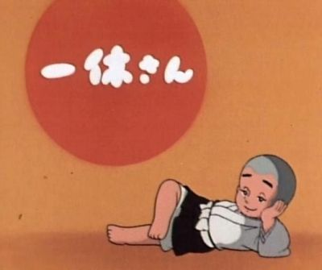

（王垠 yinwang.org 版权所有，未经许可，请勿转载）

本人进入了比较长的，理所应得的休息和娱乐时间。无聊时也看看闲书和电影。这里推荐几个最近看的东西。
最近给我最大影响的是这本1988年出版的《The Design of Everyday Things》（简称DOET）。有趣的是，它的作者 Don Norman 曾经是 Apple Fellow，也是《The Unix-Haters Handbook》一书序言的作者。
DOET 不但包含并且支持了我的博文《黑客文化的精髓》以及《程序语言与……》里的基本观点，而且提出了比《什么是“对用户友好”》更精辟可行的解决方案。
我觉得这应该是每个程序员必读的书籍。为什么每个程序员必读呢？因为虽然这本书是设计类专业的必读书籍，而计算机及其编程语言和工具，其实才是作者指出的缺乏设计思想的“重灾区”。看了它，你会发现很多所谓的“人为错误”，其实是工具的设计不合理造成的。一个设计良好的工具，应该只需要很少量的文档甚至不需要文档。这本书将提供给你改进一切事物的原则和灵感。你会恢复你的人性。
值得一提的是，虽然 Don Norman 曾经是 Apple Fellow，但我觉得 Apple 产品设计的人性化程度与 Norman 大叔的思维高度还是有一定的差距的。
如果你跟我一样不想用眼睛看书，可以到 Audible 买本有声书来听。
每个人都想得到快乐，但是他们往往误解了快乐的来源，追求了错误的东西，所以大多数人因此得到的是痛苦，并且给其他人带来痛苦。英国哲学家和数学家罗素写于1930年的《The Conquest of Happiness》就是彻底的分析这些2014现代人的常见问题的。
在第一部分，罗素透彻的分析了几个常见的不快乐的原因：看破红尘，竞争，过度追求刺激，疲劳，嫉妒，罪恶感，被害妄想症，…… 第二部分，他提出了得到快乐的有效方法。
如果你认为自己没有这些问题，或者认为自己懂得这些是怎么回事，请再次反思一下，因为每个人都或多或少有这些问题。特别是我发现，竞争和攀比所带来的不快乐，在中国人里面是很普遍的现象。
另外，很多心理学家，特别是所谓“正向心理学”（positive psychology），也声称研究如何使人快乐，但我发现他们很多只是扯着“快乐”的幌子，开发自己的市场。罗素的思想比他们深刻很多。
谈到人性，我推荐卓别林在电影《大独裁者》里面的最后演讲。他引起了我对技术的价值的思考。有人说，世界不是毁在疯子手里就是毁在工作狂手里，是有一定的道理的。
其实比《大独裁者》更幽默，更有趣，对现代社会更有意义的，是卓别林的《摩登时代》。这样一部1930年代的黑白无声电影，道出了直到2014年的今天，世界上最大的问题：过度工作。
现代社会很多人为了所谓的“生存”，把自己变成了一台盲目不停工作的机器。加班加点的干活，并且还试图让别人也变成跟他一样。一切都是为了工作，为了效率，为了“优秀”，为了出人头地。太多的野心，太多的目标，却对身边最简单的乐趣视而不见。试试放慢匆忙的脚步，思考一下自己在干什么吧！
因为这些原因，我继续睡觉，这是拯救世界的最好办法 zZZZ